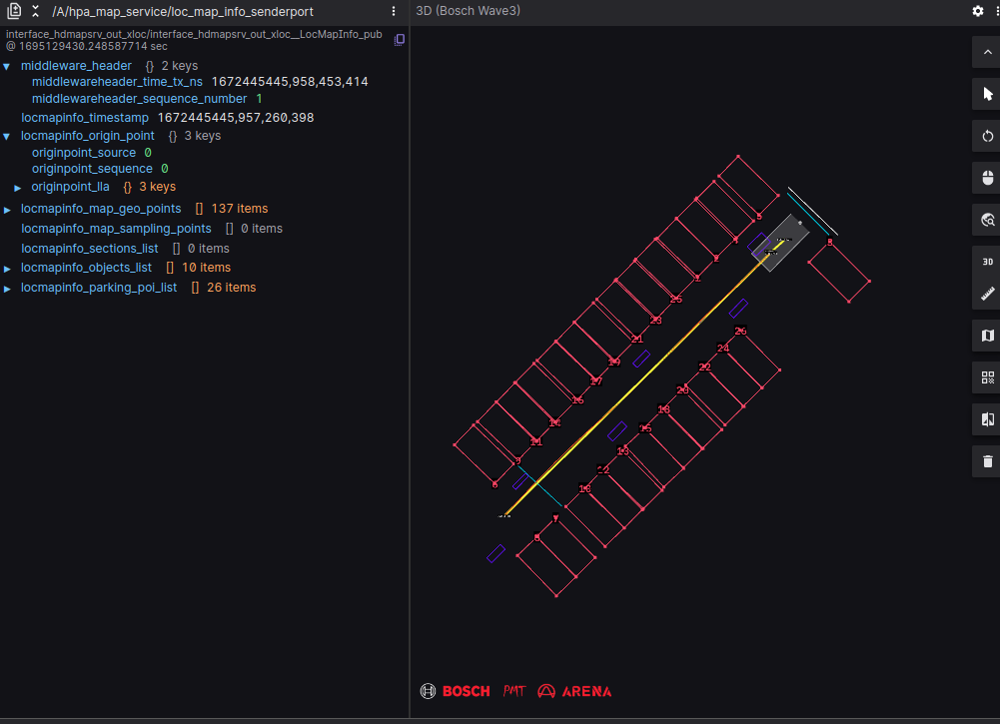
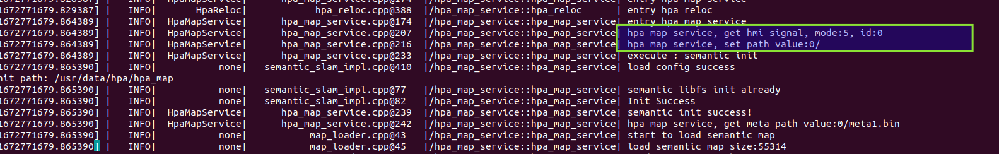
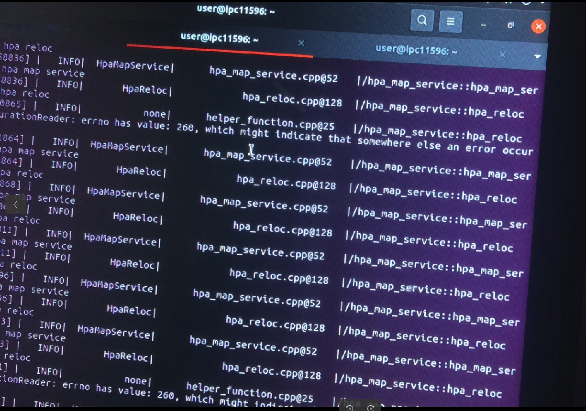
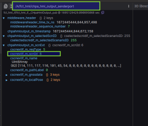

Question 1: LOC prompts to not receive map maps
Method 0: First see if the HPA Map Service is Core Dump.
Method 1: Use foxglove to see/A/HPA_MAP_SERVICE/LOC_MAP_INFO_SENDERPORT. If there is a map display, it means that the map has been sent to LOC.For example:

Foxglove's layout file is as follows (directly open a new window to enter the topic name):
Method 2: If there is no map display, you can see the log file hpamapService_Activity.log.If there is no log in the following frame in the log, it means that the Load Path signal of FCT is not received.

If all logs are as follows, there is no Load Path signal from FCT.

Method 3: If there is no log.Check if there are/a/fct_hmi/chpa_hmi_output_senderport this topic, and CSCNEXTIF_REQTYPE is 5.If not, it means that the FCT does not send a Load Path signal.

tips:
The topic required for the debugging problem with HPA MAP Service is as follows:
/A/fct_hmi/chpa_hmi_output_senderport
/A/loc_gateway/xper_global_loc_result_senderport
/A/viper_parking/xper_nrcs_super_point_senderport
/A/fct_state_machine/chpahsmto_map_senderport
/A/hpa_map_service/hpa_global_path_info_senderport
/A/hpa_map_service/loc_map_info_senderport
/A/hpa_map_service/parking_map_info_senderport
/A/hpa_map_service/planning_map_info_senderport
/A/hpa_map_service/base_map_info_senderport